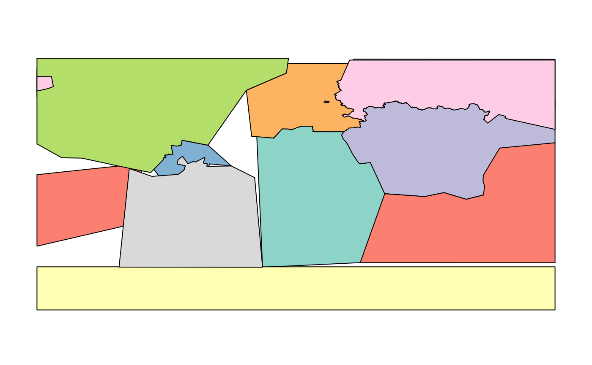
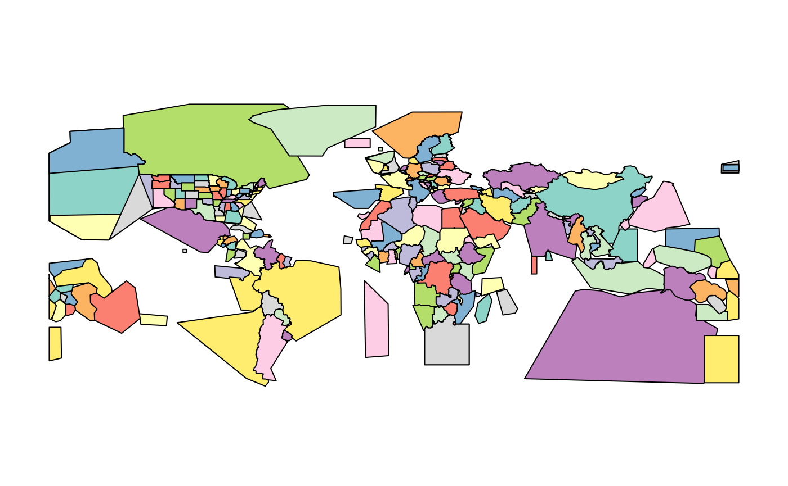
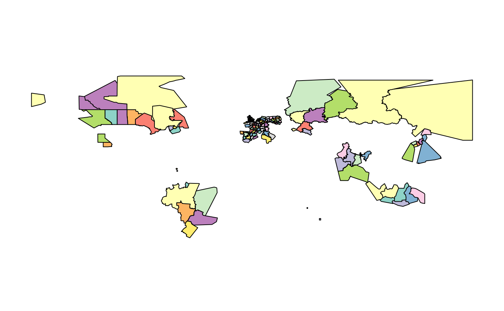
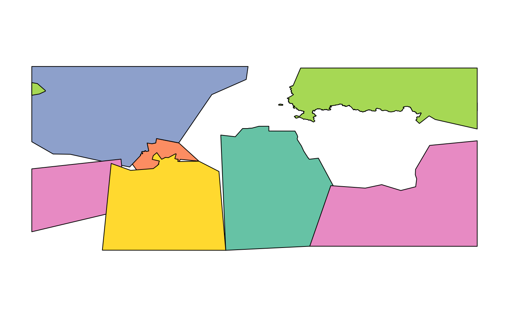
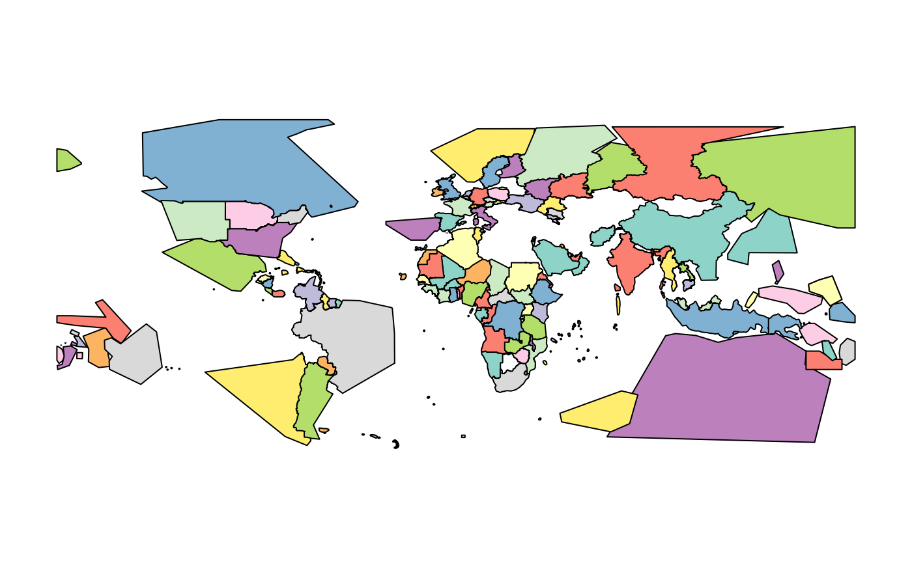
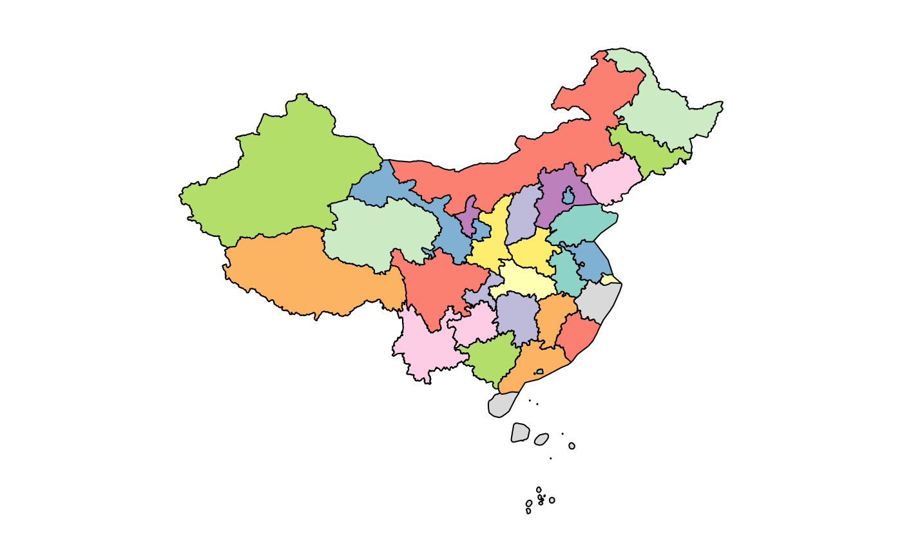
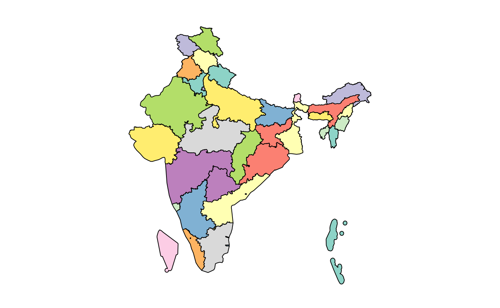
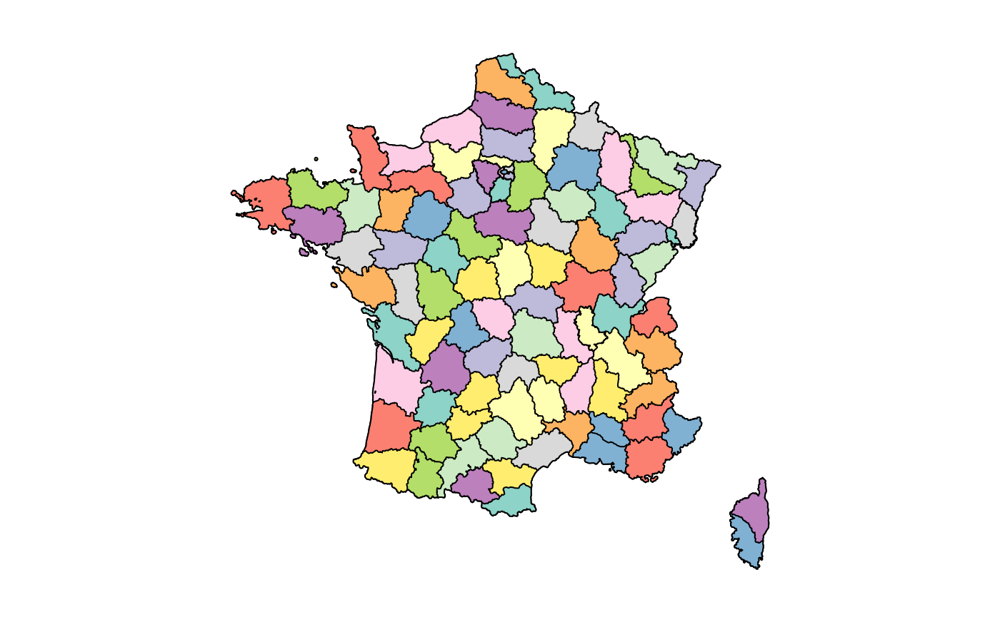
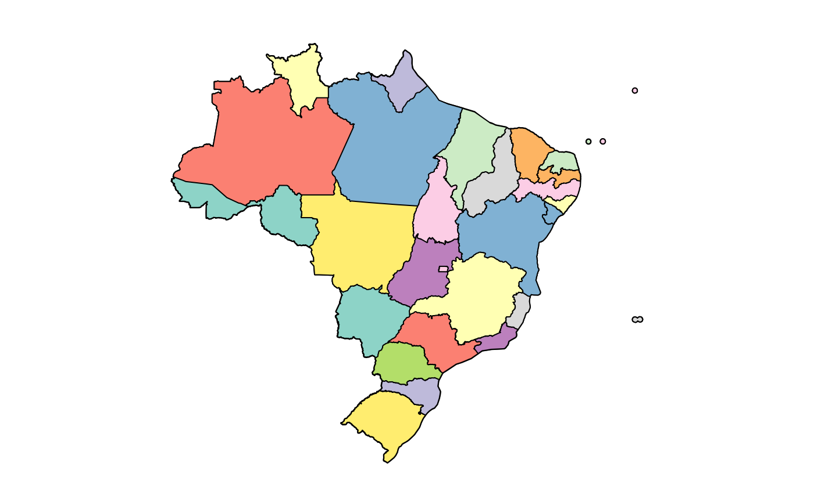
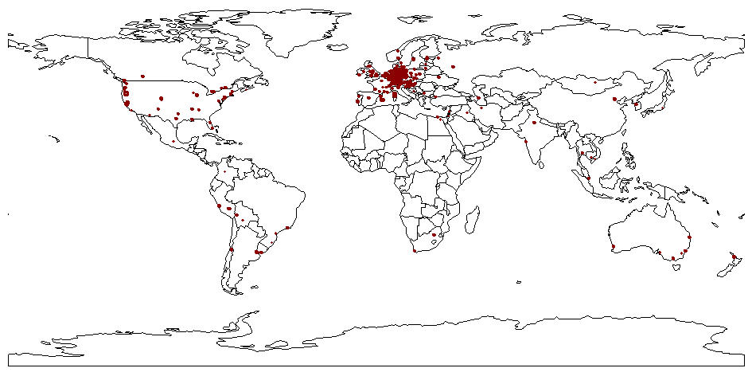

Comparing the supported OSM providers
Source:vignettes/providers_comparisons.Rmd
providers_comparisons.RmdThis vignette presents a simple comparison between the OSM providers supported by osmextract, explaining their pros and cons. We decided to write this vignette since, as you will see in the following examples, even if you always start from the same pre-defined place, you can get significantly different OSM extracts according to the chosen provider. Hence, we want to help you choose the best suitable provider for a given situation.
We assume that you are already familiar with the basic functions in osmextract, otherwise please check the “Get Started” vignette for a more detailed introduction. Now, let’s start with an example, but, first of all, we have to load the package:
library(osmextract)
#> Data (c) OpenStreetMap contributors, ODbL 1.0. https://www.openstreetmap.org/copyright.
#> Check the package website, https://docs.ropensci.org/osmextract/, for more details.
library(sf)
#> Linking to GEOS 3.10.2, GDAL 3.4.1, PROJ 8.2.1; sf_use_s2() is TRUEWe geocode the coordinates of Lima, the Capital of Peru,
lima = tmaptools::geocode_OSM("Lima, Peru")$coordsand look for a match in the OSM extracts using oe_match():
oe_match(lima, provider = "geofabrik")
#> $url
#> [1] "https://download.geofabrik.de/south-america/peru-latest.osm.pbf"
#>
#> $file_size
#> [1] 1.86e+08
oe_match(lima, provider = "bbbike")
#> $url
#> [1] "https://download.bbbike.org/osm/bbbike/Lima/Lima.osm.pbf"
#>
#> $file_size
#> [1] 15941307
oe_match(lima, provider = "openstreetmap_fr")
#> $url
#> [1] "http://download.openstreetmap.fr/extracts/south-america-latest.osm.pbf"
#>
#> $file_size
#> [1] 3559974408We can see that:
- when we used
geofabrikprovider (which is also the default provider), then the inputplacewas matched with an OSM extract corresponding to Peru region; - when we used the
bbbikeprovider, then the inputplacewas matched with an OSM extract corresponding to the city of Lima; - when we used
openstreetmap_frprovider, then the input data was matched with an OSM extract covering the whole of South America.
The reason behind these differences is that each OSM provider divides the geographical space into different discrete chunks, and, in the following paragraphs, we will show the tessellation used by each provider.
Geofabrik
geofabrik is a society that provides map-based services and free downloads of OSM extracts that are updated daily. These extracts are based on a division of the world into different regions, covering a whole continent (plus Russian Federation):
par(mar = rep(0, 4))
plot(geofabrik_zones[geofabrik_zones$level == 1, "name"], key.pos = NULL, main = NULL)
or several countries all around the world:
plot(geofabrik_zones[geofabrik_zones$level == 2, "name"], key.pos = NULL, main = NULL)
Geofabrik also defines several special zones, such as Alps, Britain and Ireland, Germany, Austria and Switzerland, US Midwest, US Northeast, US Pacific, US South and US West. Moreover, it contains extracts relative to some administrative subregions, mainly in Europe, Russia, Canada and South America:
plot(geofabrik_zones[geofabrik_zones$level == 3, "name"], key.pos = NULL, main = NULL)
Check ?geofabrik_zones and the provider’s webpage for more details.
Openstreetmap.fr
openstreetmap_fr extracts are taken from http://download.openstreetmap.fr/, a web-service that provides OSM data updated every few minutes. The extracts are based on several regions, such as the continents:
# Russian federation is considered as a level 1 zone
plot(openstreetmap_fr_zones[openstreetmap_fr_zones$level == 1, "name"], key.pos = NULL, main = NULL)
or some countries around the world (less than geofabrik):
plot(openstreetmap_fr_zones[openstreetmap_fr_zones$level == 2, "name"], key.pos = NULL, main = NULL)
It can be noticed that there are several holes (such as Peru, which is the reason why, in the first example, Lima was matched with South America data), implying that openstreetmap_fr cannot always be used for geographical matching of a place. Nevertheless, it provides extremely detailed extracts for some regions of the world, like China,
plot(openstreetmap_fr_zones[openstreetmap_fr_zones$parent == "china", "name"], key.pos = NULL, main = NULL)
India,
plot(openstreetmap_fr_zones[openstreetmap_fr_zones$parent == "india", "name"], key.pos = NULL, main = NULL)
France,
ids_2 = openstreetmap_fr_zones$parent %in% "france"
ids_3 = openstreetmap_fr_zones$parent %in% openstreetmap_fr_zones$id[ids_2]
plot(openstreetmap_fr_zones[ids_2 | ids_3, "name"], key.pos = NULL, main = NULL)
and Brazil
ids_2 = openstreetmap_fr_zones$parent %in% "brazil"
ids_3 = openstreetmap_fr_zones$parent %in% openstreetmap_fr_zones$id[ids_2]
plot(openstreetmap_fr_zones[ids_2 | ids_3, "name"], key.pos = NULL, main = NULL)
BBBike
bbbike provider is based on https://download.bbbike.org/osm/bbbike/. It is quite different from any other provider supported in osmextract since it contains OSM data for more than 200 cities worldwide.
par(mar = rep(0, 4))
plot(sf::st_geometry(spData::world))
plot(sf::st_geometry(bbbike_zones), border = "darkred", add = TRUE, lwd = 3)
bbbike provider is the safest choice if you are looking for OSM data relative to a particular city in the world.